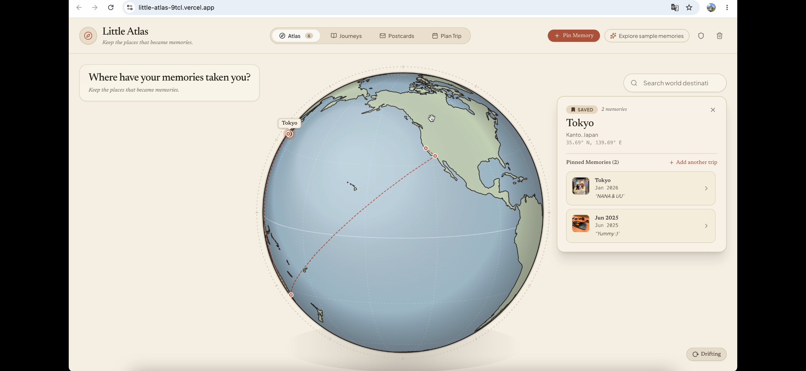
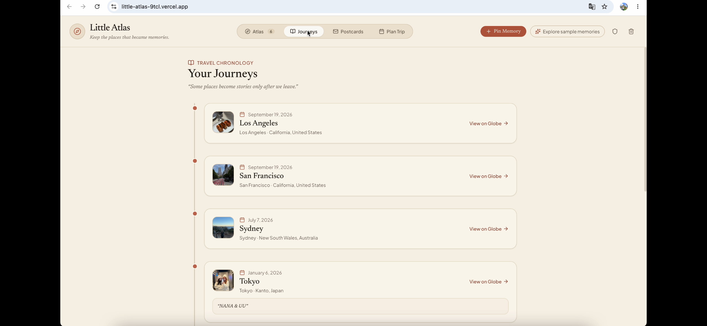
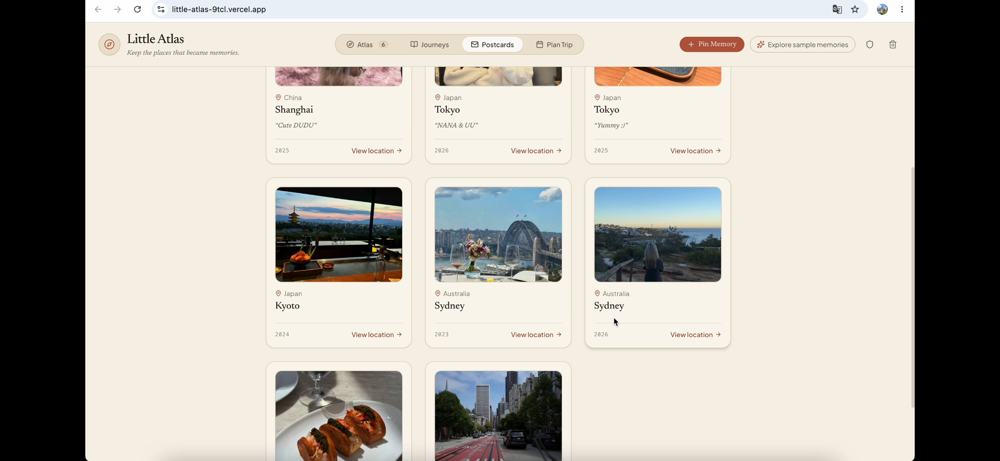
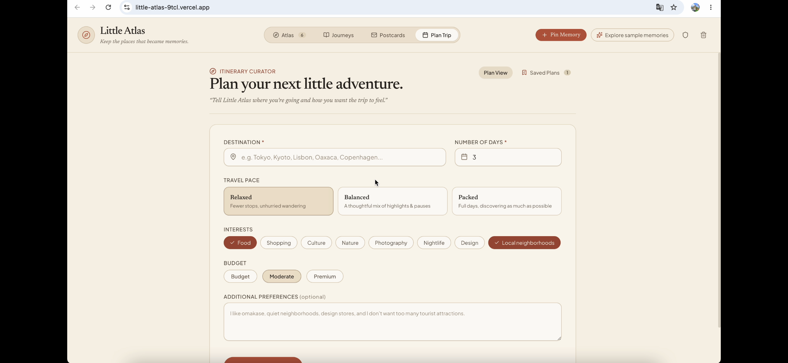
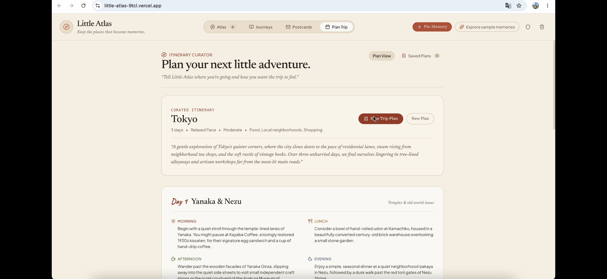
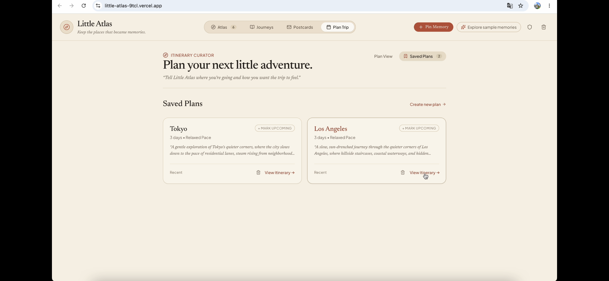

A personal travel archive that preserves past journeys and helps plan the next one. An illustrated globe connects places to the photos, dates and notes that make them meaningful.
My roleProduct concept & interface design AI-assisted web implementation & iteration
ContextBerkeley MDes · MINI-ME coursework September 2026
OutcomeWorking web prototype Memory archive + AI trip planning

Atlas · Revisit a place and see the distinct memories attached to it.
01 / The idea
From scattered photos to a personal atlas.
Travel photos can remain disconnected from where they happened and what they meant. I wanted a calmer way to preserve those moments, revisit them by place or time, and turn favorites into keepsakes.
The central design distinction: a place is not a memory. A traveler can return to the same city at different times. Each visit needs its own photos, date and story without duplicating the location.
The project began as a personal design exploration within Berkeley MDes coursework. The process combines interface iteration with a working web prototype.
RememberChoose a place. Add photos, a date and a note.
RevisitExplore the globe or browse the journey timeline.
KeepCollect favorite moments as postcards.
PlanDescribe the next trip and refine an AI-generated itinerary.
02 / The experience
Past journeys. Future possibilities.
A place can hold more than one story.
The illustrated globe gives memories a spatial home. A selected city opens its saved memories, with an option to add another trip to the same place.
Saving a memory stays a deliberate user action: the traveler chooses the place, photos, date and note.
Atlas · Two memories share one place, rather than becoming duplicate destinations.
Revisit the journey through time.
Journeys arranges memories chronologically, bringing dates, locations and notes together. “View on Globe” connects the timeline back to the spatial archive.

Journeys · A chronological view complements the globe.
Make a moment something to keep.
Postcards brings photos, locations and personal notes into a collection of keepsakes. The memories remain connected to their original places.

Postcards · Favorite moments become a visual collection.
Tell the planner how the trip should feel.
Destination and duration establish the trip. Pace, interests, budget and additional preferences shape the suggestions, giving the traveler a clear starting point before generation.

Plan Trip · Explicit preferences guide the generated itinerary.

Generated itinerary · Review the daily suggestions, then save a plan or revise it through conversation.
Conversational refinement lets the traveler request changes after seeing a first draft. The interface explains that unchanged days should be preserved, keeping revisions focused rather than restarting the whole itinerary.

Saved plans · Keep proposed journeys separate from memories of places already visited.
03 / Design decisions
One city. More than one story.
This personal coursework project evolved through building, trying and revising the prototype. The most useful changes came from clarifying what a place, a memory and a future plan each meant.
A place is not a memory.
Early on, I treated searched locations, saved places and photo memories as the same object. That became confusing when representing another visit to the same city: it needed its own photos and date, without creating another copy of the place.
I separated the two. A location now holds independent memory records, each with its own story. The Atlas view shows two Tokyo memories within one selected place.
Remember by place—or by time.
The early interface felt like a dashboard. I reduced unnecessary cards and controls and made the illustrated globe the center of the experience.
The globe offers a way to browse spatially, while Journeys shows how visits unfolded over time. “View on Globe” connects the timeline back to the same records, rather than creating a second archive.
Let AI suggest the next trip.
A remembered visit and a generated itinerary serve different purposes. I kept memories authored by the traveler and put AI suggestions in a separate planning flow.
Destination, duration, pace, interests and budget make preferences explicit before generation. Conversational refinement is intended to revise the requested parts of a plan while preserving the rest; saved plans stay separate from past memories.
04 / Building the prototype
Design, build, try, revise.
I developed the prototype through AI-assisted coding, using the interface and runtime behavior to identify what needed to change. The journal records both visual revisions and implementation problems.
Human input
Memory content, selected locations and travel preferences.
Application logic
Place matching, duplicate prevention, memory storage, timeline sorting and saved plans.
AI assistance
Trip-planning requests pass through a server endpoint to Gemini and return a structured itinerary.
Deployment
AI requests worked locally but initially failed on Vercel. I moved Gemini requests into serverless endpoints and standardized runtime environment-variable handling.
Memory storage
I revised the place-and-memory model so a location could contain multiple separate records with their own photos, dates and notes.
Planning
I added travel preferences, generated itineraries and conversational refinement, extending the archive from remembering past trips to planning future ones.
05 / Outcome & next steps
A working archive. A design to keep testing.
The prototype brings the globe, journey timeline, postcard collection and trip planner together. The deployed experience supports sample memories across views and preference-based itinerary generation.
Next, I would test whether people understand the difference between a saved place and a memory, can add a second visit without confusion, and can revise an itinerary without losing the parts they want to keep.